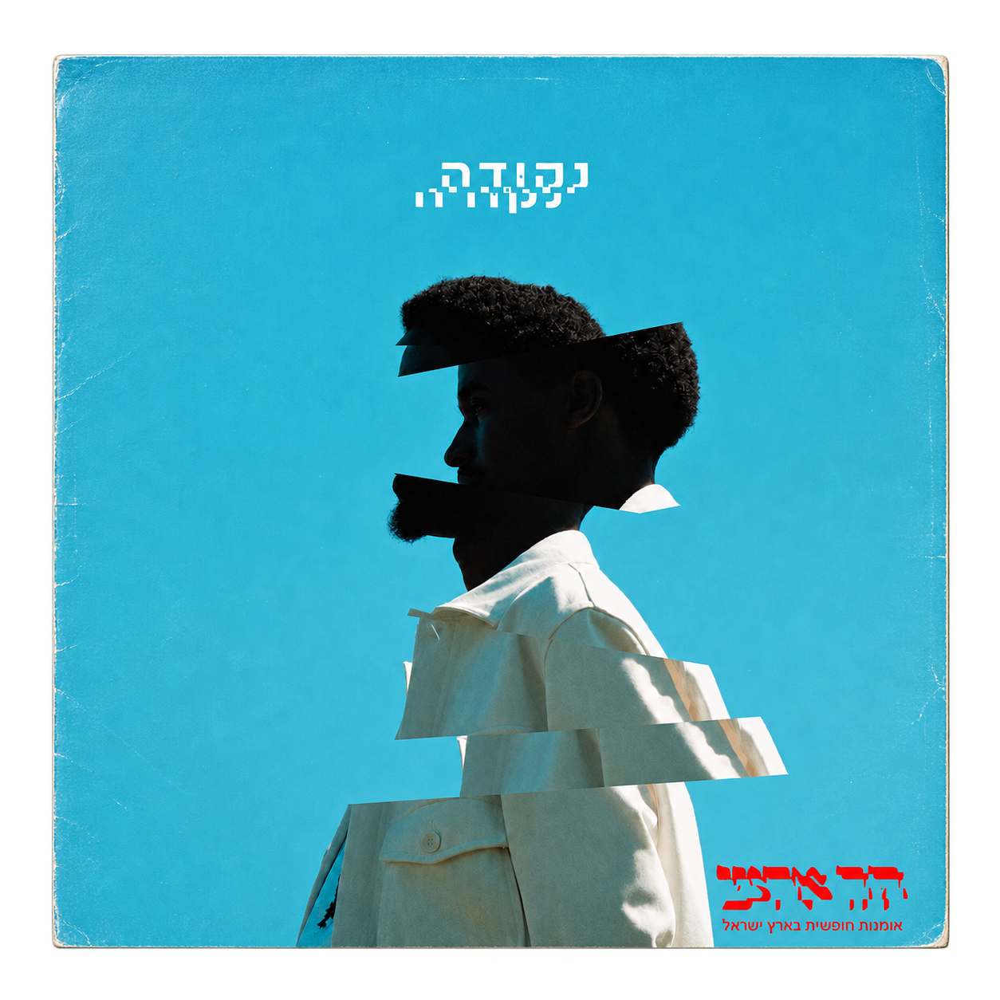
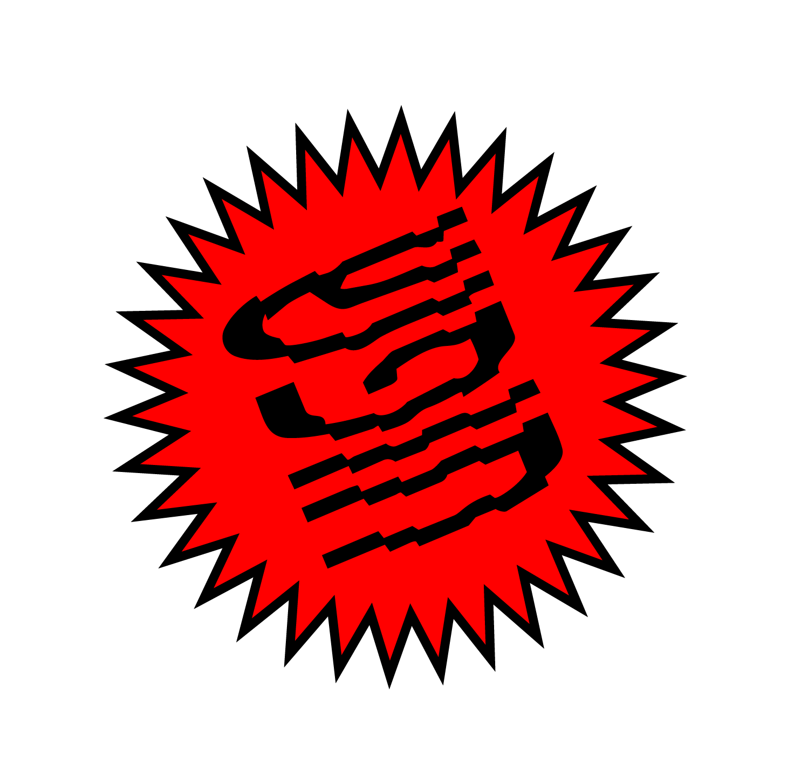
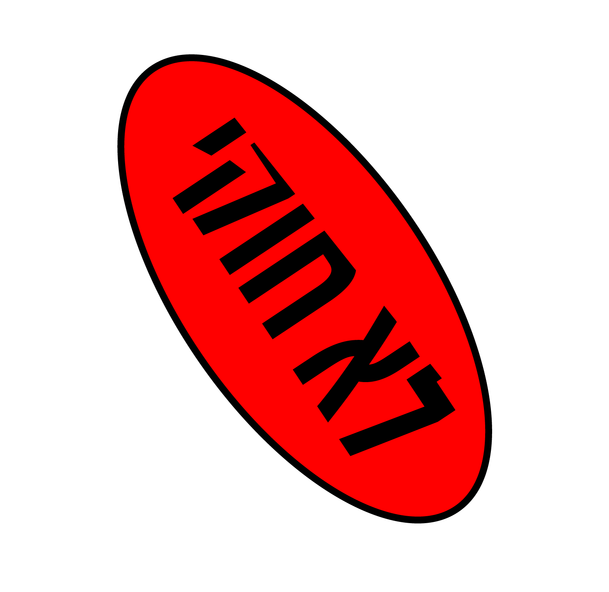
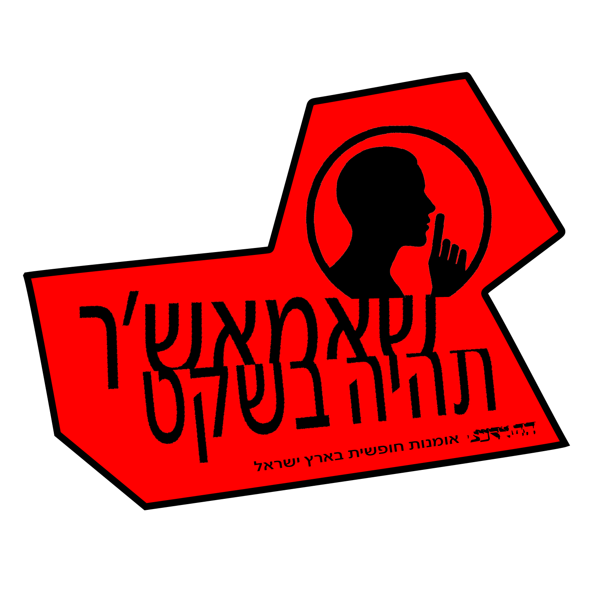
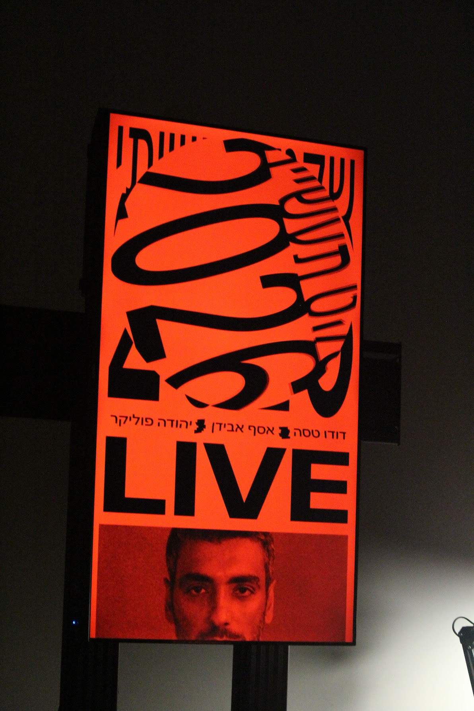

HED ARTZI
an iconic national music label
transforming into a resistance cultural movement
A speculative rebranding of Hed Artzi, an iconic Israeli music label, set in an imagined future where Israel has become a dictatorship and independent artistic expression is forbidden.
In this reality, Hed Artzi goes underground, transforming into a secret cultural movement dedicated to preserving and spreading free Israeli culture. With citizens under constant surveillance, music is distributed through underground events and analog formats, beyond the reach of digital monitoring.
The project explores the role of creativity in a broken reality, and how a brand's identity can shift in response to political change.
In collaboration with Sahar Barel.

A Bag Containing a Vinyl Record, with a Sticker and Receipt.

The record sleeve designs reinterpret the original covers through cutting, and visual distortion.
Recognizing the iconic status of album covers, we aimed to disrupt their familiar imagery while preserving their visual value.







a Motion Poster for an Underground Concert

a Motion Poster for an Underground Concert